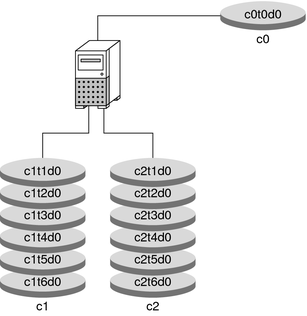

|
|||
|
1. Getting Started With Solaris Volume Manager 2. Storage Management Concepts 3. Solaris Volume Manager Overview 4. Solaris Volume Manager for Sun Cluster (Overview) 5. Configuring and Using Solaris Volume Manager (Scenario) Final Solaris Volume Manager Configuration 8. RAID-0 (Stripe and Concatenation) Volumes (Overview) 9. RAID-0 (Stripe and Concatenation) Volumes (Tasks) 10. RAID-1 (Mirror) Volumes (Overview) 11. RAID-1 (Mirror) Volumes (Tasks) 12. Soft Partitions (Overview) 16. Hot Spare Pools (Overview) 20. Maintaining Solaris Volume Manager (Tasks) 21. Best Practices for Solaris Volume Manager 22. Top-Down Volume Creation (Overview) 23. Top-Down Volume Creation (Tasks) 24. Monitoring and Error Reporting (Tasks) 25. Troubleshooting Solaris Volume Manager (Tasks) A. Important Solaris Volume Manager Files B. Solaris Volume Manager Quick Reference |
Scenario Background InformationThroughout this book, the scenarios and many of the examples relate to a single configuration. Although this configuration is small (to simplify the documentation), the conceptsl scale to much larger storage environments. Hardware ConfigurationThe hardware system is configured as follows:
An alternative way to understand this configuration is shown in the following diagram. Figure 5-1 Basic Hardware Diagram Storage ScenarioInitial Physical Storage ConfigurationHere is the storage configuration before Solaris Volume Manager is configured:
|
||
|